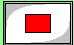
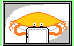
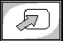
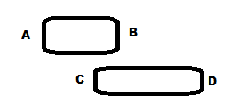
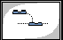
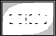
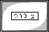
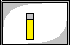
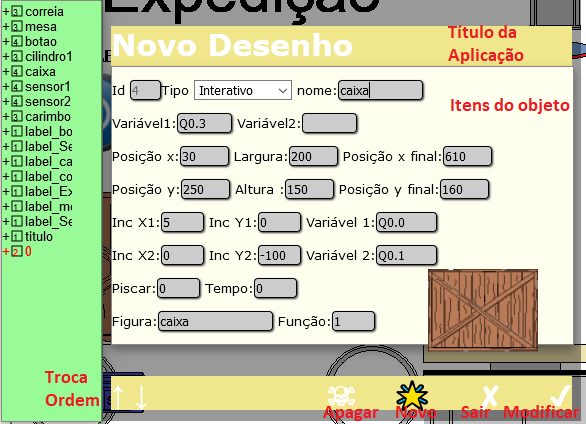
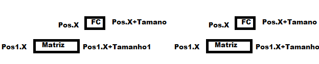

2.1 Da Simulação
Para executar o programa faça;
- Crie um programa LADDER no ambiente localhost:4333;
- Envie para o CLP VIRTUAL;
- Coloque o CLP no MODO RUN;
- Crie o aplicativo para simulação no endereço localhost:4333/simulador ou scriweb.herokuapp.com/simulador,
 -
Abra um pronto .
-
Abra um pronto .
 -Dê
um play no simulador.
-Dê
um play no simulador.
- - Pare a simulação
Além deste o software tem os seguintes botões:
 -
Configuração.
-
Configuração.
- Help
- Sobre
2.2 Da Edição
Para entrar no modo edição através do botão , que alterna os modo edição e simulação.
2.3 Das variáveis:
Veja o help do configurador LADDER em localhost:4333 para ver as variáveis permitidas no CLP virtual. Além das variáveis do simulador Ladder, foram incluidos novos tipos de variáveis. As variáveis X, Y, U, D, N e V. Para utilizar está variável coloque o apontador (X ou Y), seguido do número da linha do objeto no arquivo de configuração. Por exemplo: X10, representa a posicao X do objeto da linha 10; Y5, representa a posicao Y do objeto da linha 5. Esta posicao será utilizada para ativar os objetos dependentes de movimentação, por exemplo quando um objeto tocar em um fim de curso. A verificação da posicao será feita da seguinte forma: A = representa um dos extremos da figura movel (esquerda ou superior) B = o outro extremo (direita ou inferior) C = representa um dos extremos do objeto que será interferido (esquerda ou superior) D = o outro extremo (direita ou inferior)

Será aplicado a seguinte lógica: ((((A < D) AND (A > C)) OR (( B < D) AND (B > C)) OR ((A < C) AND (B > D)))
Também foram incluidas novas variáveis: Set, Reset e Não. Basta colocar as letras: S,R e N antes da variável.A variável set e reset só coloca em 1 ou 0 caso esteja no local.e a variável N serve para desligar um avanço.
Exemplos: SX1, RY4, NQ0.0
A VX Ou VY é utilizado para verificar a posição conforme o diagrama anterior mas somente se variavel da linha estiver em um. Por exemplo VX1 verifica se o objeto atual está alinhado com o objeto da linha 1 se o tag da linha 1 estiver com valor um.
U e D é utilizado com o objeto texto para somar ou diminiur, conforme valor do tag da linha.
2.4 Da Operação de GRAVAR e LER Arquivos
É possível ler arquivos de qualquer diretõrio do sistema operacional, mas acomselha-se gravá-los no diretório SIMULADOR do software.
Como o software envia dados via WEB, para a segurança da operação, não é permitido salvar arquivos diretamente no sistema, e quando solicitamos o salvamento do arquivo, na verdade o software fará o download do arquivo.
Com este botão
é possível gravar. Para completar a operação
você deverá move-lo para o diretõrio de
utilização, recomendamos utilizar o diretório
SIMULADOR. Para ler um arquivo utiliza-se o botão:
 .
.
2.5 Da Configurção
Para configurar o simulador...
2.6 Da Simulação
Ao simular o ladder os comandos LADDER podem aparecer em até sete figuras diferente, com o seguinte significado: - Figura 1 - Padrão - Figura 2 - desligado - Figura 3 - Ligado 1 - Figura 4 - Ligado 2 (Utilizado para piscar as figuras) - Figura 5 - Visualização 3 - Figura 6 - Visualização 4 - Figura 7 - Visualização 5.
2.7 Das Funções de Edição
No modo edição tem-se oito diferentes funções:
|
Icone |
Funcão |
|
|
Troca modo edição por simulaçao |
|
|
Permite escolher um objeto da tela. |
|
|
Entra com um novo objeto do tipo texto. |
|
|
Entra com um novo objeto do tipo desenho |
|
|
Entra com um uma animação |
|
 |
Entra com um novo objeto interativo tipo botão |
|
 |
Entra com um novo objeto interativo não visual |
|
 |
Display |
|
 |
Bargraph, gráfico de barras. |
Ao selecionar a função
aparece a seguinte tela:

3. Do Desenvolvimento
Da organização dos arquivos e diretórios são relacionados no programa principal. Consulte o help do arquivo principal.
3.1 Do Arquivo de Simulação:
O arquivo de simulação é dividido em linhas com as seguintes colunas: Tendo as colunas as funções:
0_id: Identificador do número da linha, iniciando-se em zero;
1_tipo: Tipo de variável(1: Label, 2: Figuras Estáticas, 3:Figuras Dinâmicas, 4:Figuras Interativas(Botões),5:Objetos Nào visuais Interativos, 6=display, 7=Bargraph ...)
2_nome: Nome do objeto;
3_var_1: Variável dependente 1;
4_var_2: Variável dependente 2;
5_pos_x_inicial: Posição do objeto;
6_dpos_x: Tamanho do objeto;
7_pos_x_final: Posição Final, caso a figura se movimente;
8_pos_y_inicial: Posição do objeto
9_dpos_y: Tamanho;
10_pos_y_final:Posição final;
11_inc_x1: Incremento relativo a variável 1 no eixo x ou se letra a cor da fonte;
12_inc_x2: Incremento relativo a variável 2, se for label o tamanho da fonte;
13_inc_y1: Incremento relativo a variável 1 no eixo y, se label cor 1;
14_inc_y2: Incremento relativo a variável 2, se label cor 2;
15_var1_dependente: Caso seja uma figura interativa, variável/propriedade de interação;
16_var2_dependente: Variável 2 de interação;
17_piscar: Habilita a troca dinâmica de figuras; se for display habilita a entradade dados;
18_tempo_pisca: Tempo para a troca de variáveis;
19_figura: Nome do arquivo da figura ou se label a mensagem a ser escrita;
20_funcao: Apontador para a tabela Função a ser executa;
21_reserva:
22_reserva:
23_reserva:
24_reserva:
3.2 Do Arquivo de imagens:
Todos os qrquivos devem ser do tipo png. As figuras que serão utilizadas para visualização devem ter as seguintes complementos no nome ['','_off','_on1','_on2','3','4','5'], sendo a raiz do nome mantida para todas as figuras e indicadas no arquivo de simulação. Por exemplo: Para monitorar uma correia em movimento, criar as figuras correia_off.png, correia_on1.png e correia_on2.png e indicar no arquivo de simulação a figura correia. Para ver uma figura estática, criar o arquivo matriz.png.
3.3 Das Tabelas de Simulação
Para simular o processo foram criadas cinco tabelas especificas:
Tabela 1: Arrays com o nome das imagens (arquivos);
Tabela 2: Arrays com as imagens;
Tabela 3: Arrays com as mensagens (labels);
Tabela 4: Arrays com as propriedades dinâmicas;
Tabela 5: Arrays com as propriedades estáticas.
A tabela um a três são compostas pelos nomes, arquivos incluindos no arquivo de simulação e label na ordem sequêncial em que aparecem.
A tabela quatro, ArraysObjStatic é composta por:
0_nome,
1_var_1,
2_var_2,
3_pos_X_nicial,
4_dpos_x ou cor da fonte,
5_pos_x_final ou tamanho da fonte,
6_pos_y_nicial,
7_dpos_y,
8_posicao_y_final,
9_inc_x1,
10_inc_x2,
11_inc_y1,
12_inc_y2,
13_var1_associada,
14_var2_associada,
15_piscar/entrada,
16_tempo,
17_tipo,
18_reserva,
19_reserva
A tabela cinco, ArraysObjDinamic por:
0_nome
1_Index_Figura(1:fig1, 2:fig2, etc)
2_Timer(uso da monitoracao)
3_PosX
4_PosY
5_Pos_ArrayImagens ou Pos_ArrayLabel
6_funcao
7_Pox_X_anterior
8_POs_Y_anterior
9_reserva
3.4. Do tipo de objetos.
3.4.1 - Label
Um objeto que permite inserir caracteres na interface gráfica. Para sua utilização deve-se configurar:
1_tipo: Tipo de variável(1: Label)
2_nome: Nome do objeto;
3- tag: Nome da varável se existir;
5_pos_x_inicial: Posição do objeto;
6_Largura: Largura do quadro;
8_pos_y: Posicao Y;
9_Altura: Altura do quadro;
11_dpos_x: Cor da fonte;
12_pos_x_final: Tamanho da fonte;
13_Cor1: Cor de fundo do quadro se tag==1;
14-Cor2: Cor de fundo do quadro se tag==0;
19_figura: Label (mensagem) a ser escrita;
3.4.2 - Figura Estática
Um objeto que permite colocar uma figura na tela e também permite a movimentação da mesma na tela. Neste caso configura-se:
1_tipo: Tipo de variável(2: Figuras Estáticas)
2_nome: Nome do objeto;
5_pos_x_inicial: Posição do objeto;
6_dpos_x: Tamanho do objeto;
7_pos_x_final: Posição Final, caso a figura se movimente;
8_pos_y_inicial: Posição do objeto
9_dpos_y: Tamanho;
10_pos_y_final:Posição final;
11_inc_x1: Incremento relativo a variável 1 no eixo x;
12_inc_x2: Incremento relativo a variável 2;
13_inc_y1: Incremento relativo a variável 1 no eixo y;
14_inc_y2: Incremento relativo a variável 2;
15_var1_dependente: Variável que ativa o incremento 1;
16_var2_dependente: Variável 2 que ativa o incremento 2;
19_figura: Nome do arquivo da figura; Neste caso basta criar uma figura sem extensões (_off, _on1, etc), por exemplo: matriz.png. Ao click em cima da figura ela vai para a posição inicial indicada.A posicao inicial é armazenada na posição 5 e 8 da tabela.
3.4.3 - Figura Dinâmica
Um objeto dinâmico que permite a troca da imagem dependendo do valor de uma variável. Para a figura dinâmica deve-se configurar:
3.4.4 - Figura Interativa (Botões e
sensores para simulação)
Figura interativa corresponde a um objeto dinâmico (mostra figuras diveferentes dependendo de um valor de tag) com a propriedade de interação com o simulador retornando um valor para o CLP Virtual. O conceito de Figura Interativa pode-se aplicar a um BOTÃO, onde um click na região da figura permitirá alterar o valor da variável associada ao mesmo. No simulador este conceito também poderá ser aplicado aos sensores, que podem ter seus valores alterados conforme o movimentação de uma figura estática.
|
Fim-de-curso e matriz sem interação |
Fim-de-curso e matriz interagindo (ocupando a mesma posição X) |
A configuração da figura
interativa precisa dos seguintes parâmetros:
3.4.4 - Objetos Não Visuais Interativos
Igual a figura interativa,mas sem a propriedade gráfica.
3.4.5 - Display
Visualização de um valor de um memória interna Usa-se as variavéis D (down) e U (Up) para mudar o valor da variavel. Para Habilitar a entrada de dados coloca-se a posição de 17 com o valor 1. A configuração da display precisa dos seguintes parâmetros:
3.4.6 - Bargraph
Visualizacão de uma figura 2D cujo um eixo é proporcional ao valor da memória interna. Usa-se as variavéis D (down) e U (Up) para mudar o valor da variavel. A configuração do bargraph precisa dos seguintes parâmetros: